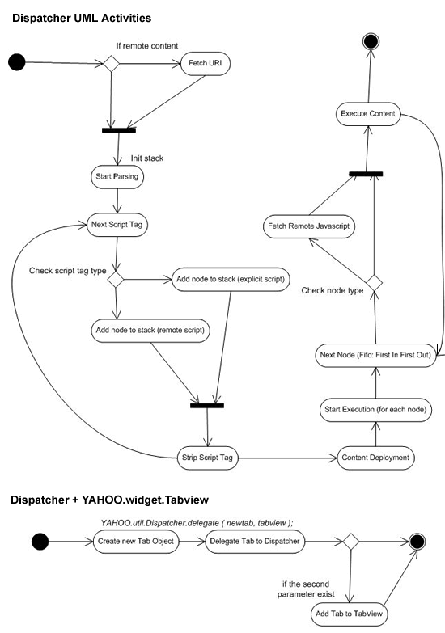

One of the most requested functionalities for the developers that work with YUI Library is the dynamic execution of the Ajax's response content, principally when we utilized the TabView component. The incompatibilities of the browsers, cause that the execution of the code inserted in the pages using the innerHTML property is not a standard mechanism, neither if you try to use a reference to a remote script ( Ej. ). I decided to study in depth this subject.
After several study days, I made out in the light this extension of YUI library, that we will call Dispatcher. This singleton object will be created during the page load, and require only the "utilities" package of the YUI library, and will guarantee several important points:
- All of the contents that will be loaded thru the dispatcher will be executed even if the script are remote.
- All the script inside a content will be executed according to the order of apparition.
- All the contents will be included in the DOM's structure before beginning the execution. This means that you can references an element inside this structure.
The dispatcher is able to manipulate three difference type of execution, and several execution children at the same time, so the global object represented by "YAHOO.plugin.Dispatcher" can be utilized without no restriction of threads, achieving thus manipulating several dynamic areas in the same page. Below, you can see the three modes for this object:
- Request a remote URL, substitution on the DOM's elements (also aggregation for accumulative contents) and automatic execution.
- Processing a content that was provided by another script, in this case the dispatcher will do the substitution and execution process.
- Dynamic management of contents provided by an Tabview YUI object, so the dispatcher will pre-process the content before the substitution mechanism of the "Tab" object, and then start the execution of the scripts after the Tab object had concluded the operation, in this case the process is transparent for the "TabView" object.
The graphic below represents the UML activity diagram for the general process:

I will describe a couple of examples of how utilize the dispatcher. In the first example we point out an association of the dispatcher and a tabview object.
The dispatcher's general initialization and the tabview:
<link rel="stylesheet" type="text/css" href="../jscripts/yui/build/tabview/assets/tabview.css"> <link rel="stylesheet" type="text/css" href="../jscripts/yui/build/tabview/assets/border_tabs.css"> <script type="text/javascript" src="../jscripts/yui/build/utilities/utilities.js"></script> <script type="text/javascript" src="../jscripts/yui/build/element/element-beta-min.js"></script> <script type="text/javascript" src="../jscripts/yui/build/tabview/tabview-min.js"></script> <script type="text/javascript" src="../jscripts/yui-cms/build/dispatcher/dispatcher.js"></script>
The only difference between a common tabview implementation and this one is the inclution of the dispatcher script ("/yui-cms/build/dispatcher/dispatcher.js"). This script create automatically the dispatcher singleton object through the namespace YAHOO.plugin.Dispatcher.
Next during the tab's initialization process you need to interconnect every tab of the tabview with the dispatcher object through one simple code line:
var tabView = new YAHOO.widget.TabView({id: 'demo'});
YAHOO.plugin.Dispatcher.delegate (new YAHOO.widget.Tab({ label: 'Inline Scripts', dataSrc: 'tabs/xhtml.with.inline.scripts.html', active: true }), tabView);
YAHOO.plugin.Dispatcher.delegate (new YAHOO.widget.Tab({ label: 'Remote Scripts', dataSrc: 'tabs/xhtml.with.remote.scripts.html', cacheData: true }), tabView);
The method "delegate" of the dispatcher will modifying the charging methods of every tab in order that the dispatcher may accomplish his work, the first parameter of this method is the new tab's object reference, and as a second parameter (optional) is the tabview object reference, and will be used by the dispatcher for adding the new tab to the tabview object, although that can be done manually.
Tthe dispatcher's general initialization:
It´s very similar to the previous example.
<script type="text/javascript" src="../jscripts/yui/build/utilities/utilities.js"></script>
<script type="text/javascript" src="../jscripts/yui-cms/build/dispatcher/dispatcher.js"></script>
Unlike the previous example, where the object tab inside the tabview does the fetch process for every tab, in that case we can request the remote URL thru the dispatcher directly:
YAHOO.plugin.Dispatcher.fetch ( 'boxwithinlinescript', 'tabs/xhtml.with.inline.scripts.html' );
YAHOO.plugin.Dispatcher.fetch ( 'boxwithremotescript', 'tabs/xhtml.with.remote.scripts.html', {action: 'add'} );
This code guarantees that the dispatcher goes to accomplish all the process, beginning from the request, the contents' parsing, the scritp tags processing, inclusion of the contents without script inside the element reference, and finally, the execution of the scripts.
super good
thank you for your contribution
Jerry
Dispatcher.fetch method with YUI tab
Hi,
how can we use YAHOO.plugin.Dispatcher.fetch
method to load the tab contents.
Coluld you please post an example for me.
Thanks in advance.
Javed
Re: Dispatcher.fetch method with YUI tab
Hello Javed,
Normally, if you want to use the dispatcher with a tabview, you can use the "delegate" routine, which is easier. But anyway, if you want to use the "fetch" routine directly you can do it like this:
// mytab is a reference to the tab object
YAHOO.plugin.Dispatcher.fetch(mytab.get("contentEl"), '/my-remote-resource.html');
This chunk: mytab.get("contentEl") return a DOM reference for the tab container element. More info here:
http://developer.yahoo.com/yui/tabview/#tabviewconfigref
This feature is particular useful when you have a tabview from markup and you want to refresh the content of the tab from outside.
In case you want to use delegate, here is the example list:
http://bubbling-library.com/sandbox/dispatcher/index.html
How to reload/refresh a particular tab?
Hi,
lets assume we have 3 tabs and the contents are getting loaded using dispatcher routine, now when i click a button on tab-1, tab-2 should reload/refresh its contents.
can anyone please help me with this?
thanks in advance
Javed
RE: How to reload/refresh a particular tab?
Hey Javed,
Check this post:
http://tech.groups.yahoo.com/group/ydn-javascript/message/35784
I think that example will fit you.
RE:RE: How to reload/refresh a particular tab?
Thanks Caridy for the reply but exmple available on the post is simply switching the tabs and displaying the CACHED contents, instead of RELOADING the contents.
when i switch the tabs it should display the CACHED contents (achieved in your example) but
when i click on the link or button it should fetch
the fresh contents and replace the cached contents (not there in the example).
Please help me with this.
Thanks
Javed
RE:RE: How to reload/refresh a particular tab?
Hey Caridy,
I got a solution...
tab.set('cacheData', false); YAHOO.plugin.Dispatcher.delegate(tab, tabView);
and to cache the contents again i have used -
YAHOO.util.Event.onDOMReady(function() {
tab.set('cacheData', true);
}
Please keep me posted if you have any other idea/solution...
Thanks
RE:RE:RE: How to reload/refresh a particular tab?
@Javed:
Yes, it's responsibility of the tab itself to define the cache rules, independently of the way the tab get active.
So, that's the correct solution.
tab loading image bug :-(
Hi,
I am using YUI-2.6 with the dispatcher plugin for tabbed pane, the problem is when you have 2 Tabs and you
select the second one and get back to the other one again, it will load some
weird stuff (most of the times loading images all over).
I am using the following CSS code to display loading image-
.yui-navset div.loading div {
background-image: url( ../images/loading.gif );
background-position:center center;
background-repeat:no-repeat;
height: 8em; /* hold some space while loading */
}
please help me with this?
Thanks.
RE: tab loading image bug :-(
@Javed:
This issue is not directly related with the dispatcher, but with the tabview itself.
If you user a dataSrc for a tab, without cache, tabview will try to load the dataSrc every time the tab become active. And of course the dispatcher will process the info again. The issue that you have here is this:
The rule that you have: ".yui-navset div.loading div" affects all the div elements within the active tab. So every single div will get a loading image and an specific height according to the css rules that you have.
Solutions? you have 3 solutions here:
1. apply cache for your tabs (cacheData: true), this means that when you re-active the first tab it will not apply the class "loading" because it was already loaded.
2. remove the loading css rule.
3. set the content to empty before the loading process.
More info here:
http://developer.yahoo.com/yui/docs/YAHOO.widget.Tab.html#config_cacheData
http://developer.yahoo.com/yui/docs/YAHOO.widget.Tab.html#event_beforeActiveChange
catching errors
I thought I saw somewhere a way to catch errors but now I can't find it. Sometimes I get 500 errors when loading a tab or maybe another error like that. I'm using the delegate method. The problem is that the loading screen gets stuck and there's no way for me to give the user an error. How do I catch the 500 error?